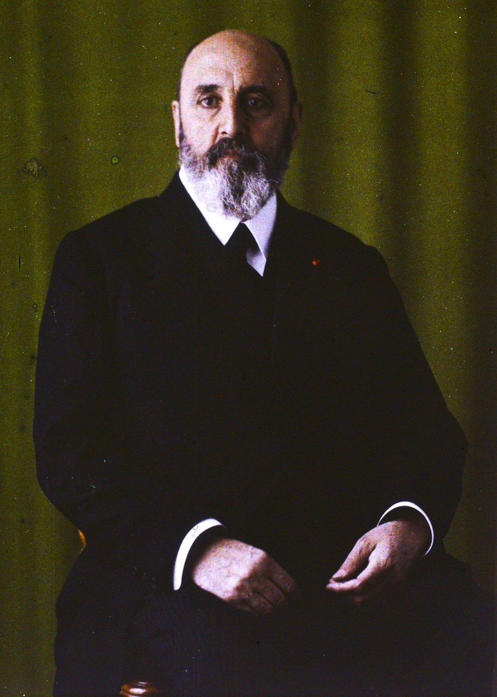
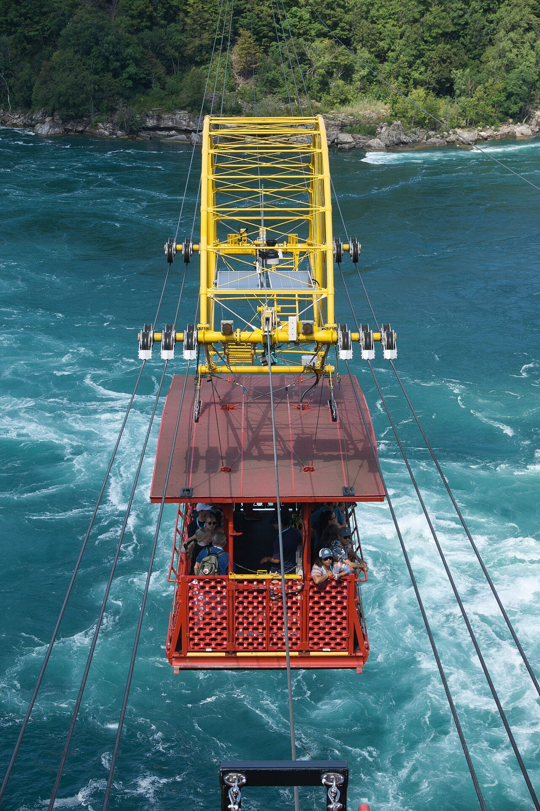
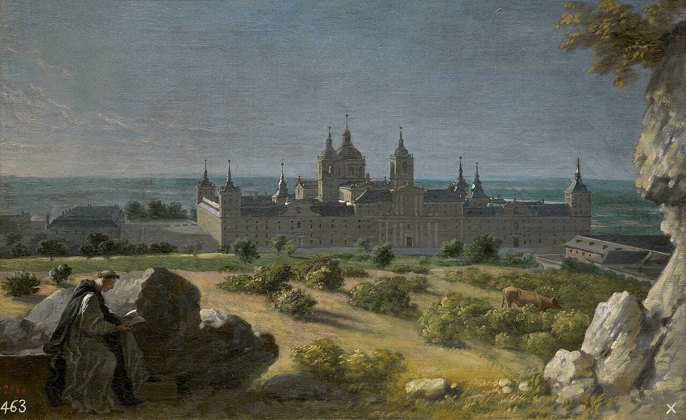

Ingenieros y arquitectos
Criterios: PC 5.1, PC 5.2
🤔 Pienso5 min
Qué hago aquí: Piensa un momento y contesta con lo que ya sabes. No pasa nada si no lo sabes: es para empezar.
¿Qué crees que se puede manejar «a distancia» en tu casa? ¿Desde cuándo crees que existe el mando a distancia?
📖 Leo y aprendo15 min
Qué hago aquí: Lee despacio, mira los dibujos y los ejemplos, y quédate con la idea clave del final.
De Cantabria salieron algunos de los mejores constructores e inventores de España.

Foto: Auguste Léon · Public domain · 1921 Leonardo Torres Quevedo.jpg

Foto: Chicken4War · CC BY-SA 4.0 · Whirlpool Aero Car, Niagara Falls 2026.jpg

Foto: Michel Ange Houasse · Public domain · Vista del Monasterio de El Escorial, por Michel-Ange Houasse.jpg
✏️ Hago25 min
Qué hago aquí: Haz las actividades en orden. Empieza siempre por las básicas.
Explica qué era el Telekino y por qué se considera un antecedente de los mandos a distancia y de los drones actuales.
Explica qué hacía El Ajedrecista y por qué se dice que es uno de los primeros ejemplos de lo que hoy llamamos inteligencia artificial.
Explica los rasgos del estilo herreriano y por qué encajaba con la forma de ser de Felipe II.
Explica quiénes eran los canteros de Trasmiera y por qué una comarca pequeña exportó tantos maestros de obra.
El teleférico de Torres Quevedo en el Niágara funciona desde 1916. Calcula cuántos años lleva en servicio. ¿Qué dice eso del diseño? ¿Qué mantenimiento crees que ha necesitado?
Compara El Escorial con una iglesia gótica de la unidad 6: decoración, formas, sensación que transmite. ¿Por qué cambió tanto el gusto en dos o tres siglos?
Diseña en un esquema un invento sencillo que se maneje a distancia, inspirado en el Telekino: qué hace, cómo recibe las órdenes y qué problema resuelve.
✏️ Puedes responder escribiendo, con un dibujo o un esquema, o contándolo en voz alta.
🚀 Amplío (si quieres saber más)
Qué hago aquí: ¿Has terminado? Lee la curiosidad o elige el reto. Es voluntario.
Investiga una obra de los Gil de Hontañón o de otro cantero de Trasmiera. Explica dónde está, de qué estilo es, qué parte hizo el maestro cántabro y por qué los canteros firmaban sus piedras con marcas.
✅ Compruebo5 min
Qué hago aquí: Contesta sin mirar la ficha y marca cómo lo llevas.